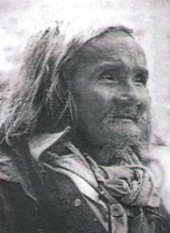

Phụ Lục 2

rên báo Thanh Niên số Xuân Bính Tý 1996, tôi đọc thấy hai bài thơ của Bùi Giáng:

Nàng tiên ấy
Nàng tiên ấy đã đi đâu
Hay còn luẩn quẩn giữa màu lá cây
Nàng đi nhớ tháng thương ngày
Thương năm tháng rộng thương ngày cong cong
Nàng đi tôi nhớ tấm lòng
Xiết bao từ ái phiêu bồng nhân gian
Nàng đi như trút lá vàng
Cho người hiệu thể cho toàn chúng sanh
Xóa giùm những nỗi bất bình
Nỗi oan riêng rẽ trong tình tự chung
Chờ mong trong cõi mông lung
Chiêm bao mộng tưởng trùng phùng người ơi
Ly rượu cuối cùng
Uống xong ly rượu cuối cùng
Cơn say choáng váng tưởng mình chúa Xuân
Chào con thể lệ điệp trùng
Đường xuân viễn tuyệt ông dừng chân đây
Cà phê kỳ vọng một ngày
Mưa nguồn dĩ vãng trùng lai một giờ
Các con từng đã bơ vơ
Chân trời mặt đất bao giờ gặp đây
Ông là ai? Ông là ai?
Ông là một kẻ thở dài quá vui
Các con đi trước thụt lùi
Xa xa nhìn thấy ông Bùi chịu chơi
Tôi bỗng có ý muốn ghi lại đây một vài chuyện mà tôi biết về Bùi Giáng. Năm 1952, sau khi xin được nghỉ làm Liên hiệu trưởng ở Nghĩa Kỳ (vùng giải phóng ở tỉnh Quảng Ngãi) và được chính quyền cách mạng cho phép đưa các con tôi từ Quảng Ngãi trở về Sài Gòn để tránh đói, tôi bèn đưa các con ra Châu Ổ rồi từ đó ra Tam Kỳ ra Hội An, vùng cai trị của người Pháp. Nhà tôi không được cùng đi trong chuyến này, phải ở lại làm việc. Anh căn dặn tôi đủ điều, trao tôi cái gánh nặng phải chu toàn cho các con, nhưng rồi anh lại làm một bài thơ đầy thương cảm:
Má bây chừ tránh đói
Bồng bế dắt nhau đi
Cha bây chừ ở lại
Học người hái rau vi
Thú Dương nào ở đâu đây?
Rau vi sánh với củ mì kém xa
No lòng vỗ bụng ngâm nga
Rằng trời đất đã sinh ta làm gì
Ngang tàng một đấng nam nhi
Phải chăng ngồi xực củ mì làm no.
(viết tháng 5-1952 tại Mỹ Thịnh)
Khi ghe đến Cẩm Phô, ở đây đã có sẵn một số công an của chính phủ Pháp (nhưng là người Việt Nam) đón chúng tôi, hỏi giấy tờ và lục lạo đồ đạc. Khi lục thấy các bằng cấp của tôi, họ bảo nhau: “Bà này về Sài Gòn sẽ làm ra khối tiền”. Và họ không làm khó dễ gì, cho tôi được mang theo một số đồ kỷ niệm. Rồi có xuồng máy của họ mang chúng tôi về Hội An, ở viện tế bần chờ một tuần lễ để làm giấy tờ đi Đà Nẵng rồi từ Đà Nẵng sẽ đi Sài Gòn.
Đến Đà Nẵng, khi biết quê ngoại của tôi ở thành phố này, họ làm giấy cho tôi về ngay nhà dì tôi ở chợ Cồn. Thật là chuyện bất ngờ khi bà con của tôi bỗng thấy tôi kéo một đoàn con đến, đứa nào cũng gầy ốm xanh xao và mệt nhừ. Tình bà con thật là tốt đẹp. Dì tôi vội vã thu xếp chỗ ăn, ở. Còn mợ tôi ở nhà đối diện lo ngay chuyện nấu nướng cho một đám khách bất ngờ. Tôi còn được gặp lại bà ngoại tôi, năm ấy đã ngoài bảy mươi nhưng vẫn còn khỏe mạnh. Bà tôi rất vui mừng khi thấy cả một lũ cháu, và hàng ngày bà lại mang quà bánh cho các con tôi ăn sáng. Còn cậu tôi làm thợ may, cắt may ngay cho các con tôi những bộ quần áo mới...
Được tin tôi sắp đưa các con về Sài Gòn, cha mẹ tôi mừng lắm, lại biết được trong thời gian ở Quảng Ngãi tôi có thêm ba đứa con trai thì càng vui hơn. Cha mẹ tôi liền gởi tiền ra cho tôi để lo may mặc cho các cháu. Các em tôi đều đã có gia đình, hùn tiền gửi ra tiếp. Tôi được biết trong thời gian tôi ở Liên khu 5, anh chị Bút Trà có gửi về cho tôi một lượng vàng và áo quần, cha mẹ tôi cùng một số bạn bè cũng gởi tiền, đồng hồ... về, mà người bạn cùng quê nhận đem đi lại quá bất lương lấy hết không trao đồng nào ngoài tấm ảnh của mẹ tôi. Sau cái thằng bất lương ấy khi lụt tràn vào làng Phổ An, vội vã mang của chạy lụt, ghe lật mất cả tài sản. Thì ra trời ở gần chứ đâu có xa! Lượng vàng anh chị tôi gửi cho mà đến tay chúng tôi, chúng tôi đâu phải sống vất vả nhiều năm và đâu phải dắt díu nhau đi tránh đói.
Ở Đà Nẵng, tôi nhận được nhiều thông tin đáng khích lệ. Anh chị tôi vẫn còn làm tờ Sàigòn Mới và các trường tư cũng đang cần một số giáo sư giảng dạy hai môn Việt văn, Pháp văn. Tôi nghĩ với sức học và những kinh nghiệm lượm lặt được trong bao nhiêu năm tạm gác bút, tôi có thể trở lại với nghề tự do để nuôi các con và chờ ngày đoàn tụ với nhà tôi.
Mọi giấy tờ rồi cũng làm xong, chỉ chờ có phương tiện là đi Sài Gòn. May sao trong lúc đi phố tôi gặp một bạn học cũ thời tiểu học. Tôi còn là học trò học nữ công gia chánh với chị của chị nầy. Người bạn cũ ấy lúc bấy giờ là vợ ông Bửu Đài, tỉnh trưởng Đà Nẵng. Thế là chị bạn liền can thiệp với chồng xin cho mẹ con tôi được đi tàu thủy vô Sài Gòn khỏi tốn tiền. Thật là dịp may hiếm có! Chúng tôi đi trên tàu Espérance (Hy Vọng), đi chuyến nầy là về luôn bên Pháp để sữa chữa. Tàu chở toàn binh lính Pháp, còn dư chỗ họ lấy một số hành khách đi Sài Gòn. Không quen đi tàu thủy, nhiều người say sóng nằm ngổn ngang. Trong gia đình, chỉ có tôi cùng đứa con trai lớn mười tuổi (tên Nguyễn Đức Trạch) là không bị say sóng. Đứa con nhỏ nhất của tôi, lúc đó mới tám tháng tuổi (tên Nguyễn Đức Thông và sau này khi viết văn lấy bút danh là Nguyễn Đông Thức), nằm li bì khiến tôi phải ngồi một chỗ không dám đi đâu. Thằng Đức Trạch đi lãnh thức ăn, đồ hộp cho mọi người, nhưng đa số đều không ăn được vì cứ nôn mửa cả ngày.
Con Nghi Xương, đứa con gái thứ hai lúc ấy mười hai tuổi, cũng không say sóng. Nó theo các hành khách khác đi viếng khắp tàu, qua các cabin và xuống dưới hầm tàu chỗ chứa thức ăn, thấy treo đầy những bò, trừu, gà vịt ở phòng đông lạnh và nghe nói những thức ăn ấy đã được giữ lạnh cả sáu, bảy tháng, mỗi khi cặp bến lớn, tàu mới đổi thức ăn hoặc lấy thêm thức ăn khác. Nó kể lại cho tôi nghe và nói kinh sợ không dám ăn những món thịt trên tàu nữa mà ăn toàn fromage hay đồ hộp. Con bé thật kỳ lạ, ngay từ lúc ấy đã sợ hãi khi phải ăn thịt những con vật đã bị giết chết và treo cả năm, sáu tháng. Sau nầy nó thường ăn chay và có lòng tín ngưỡng đạo Phật, dọn đường đi tu. Còn tôi trong khi cứ phải ngồi ẵm cu Thông trên boong tàu, tôi chỉ đưa mắt ngắm trời biển mênh mông. Trên đất liền, con tàu to như một lâu đài, vậy mà ra biển nó còn bé tí không nghĩa lý gì, không có gì để mình tin tưởng là nó đủ vững chắc để có thể chống trả nổi những phong ba bão táp...
Tôi ngồi nhìn hết trời nước bao la đến quan sát bọn lính Pháp. Chúng cũng say sóng nằm la liệt và khi qua cơn nôn mửa, tỉnh táo lại, chúng thường tập hợp trên boong tàu vào buổi chiều mát để bày trò chơi giải trí, vui cười đùa giỡn cho không khí đỡ buồn tẻ. Các con tôi cũng hay thích thú đứng nhìn họ chơi. Trong những trò chơi của bọn lính Pháp, có trò bịt mắt tìm người nào đánh mình. Người bị bịt mặt đứng giữa một vòng người, rồi một người trong vòng tiến ra đập vào vai người bịt mắt, thật lanh, rồi chạy trở lại chỗ cũ, trong khi người bị bịt mặt giở ngay cái khăn che mắt ra và nhận diện kẻ đã đánh mình, nếu trúng thì người ấy phải bị thay. Tôi thật buồn cười thấy có nhiều anh lính năm lần bảy lượt vẫn chưa nhận diện được kẻ đã đánh mình và cứ bị đứng giữa vòng, mặt mày ngố ngố làm sao ấy. Trong lúc ấy bỗng có một người Việt Nam là hành khách trên tàu, từ khi lên tàu đến lúc ấy tôi chỉ thấy anh ta cắm cúi đọc sách, đến giờ ăn thì đi lãnh cơm, không hề trò chuyện với ai. Thanh niên ấy trạc hai mươi mấy tuổi, mặc áo sơmi trắng và quần tây xám, tóc húi cua, mặt tròn có cái thẹo trên trán, da ngăm đen và có vẻ khỏe mạnh. Anh ta đứng lên xin bọn lính cho được cùng chơi, bằng một thứ tiếng Pháp có học hẳn hoi. Bọn Pháp chấp thuận ngay và anh xin được làm người bị bịt mắt. Thằng Đức Trạch nói với tôi: “Mẹ coi kìa, bọn lính da trắng ngó vậy mà ngu quá! Tụi nó lúc nào cũng không bằng anh lính da đen, anh ta lanh lợi ghê đi, một lần bị bắt là vô chỉ trúng ngay tên nào đã đánh mình. Bây giờ xem thử cái ông Việt Nam này có lanh lợi và thông minh như ông lính da đen kia không”. Quả nhiên anh chàng Việt Nam này cũng không kém phần thông minh, lanh lợi. Hễ bị bắt vào vòng là chỉ đúng ngay kẻ nào đã đánh mình, không cần đến lần thứ hai. Bọn lính da trắng khi đánh ai rồi chạy về chỗ, hoặc đứng sai hàng hoặc nét mặt không giữ được tự nhiên, rất dễ bị phát hiện... Sau vài lần anh xuất hiện gia nhập trò chơi như vậy, các con tôi đã bắt đầu làm quen với anh và anh hỏi gì chúng nó mà chúng nó nhìn về phía tôi. Rồi anh hướng dẫn các con tôi xuống tàu, viếng tàu, gặp các người đầu bếp hay các viên chỉ huy của tàu để trò chuyện. Các con tôi kể lại anh nói anh đã lội qua sống ở Quảng Nam để ra Đà Nẵng xin được vào Sài Gòn...
Tại bến Nhà Rồng đã có cậu Năm Lâm, em trai chị Bút Trà, và cháu Thành, con trai lớn của chị, đi xe hơi ra rước. Tôi đứng dựa vào lan can tàu nhìn xuống bến tìm người quen. Cảnh tấp nập của cảng Sài Gòn khiến tôi không khỏi mừng mừng tủi tủi. Cái thành phố thân yêu mà tôi đã từng sống với cha mẹ suốt trong những năm học ở Gia Long, rồi lập gia đình, rồi năm 1943 lại bồng bế con cái để về Quảng Ngãi khi Mỹ thả bom ở Sài Gòn. Thật cuộc đời đưa đẩy lắm trớ trêu. Dâu bể, bể dâu đến thế! Tôi đứng ở lan can tàu, tìm một chỗ riêng rẽ để những người đi đón dễ trông thấy. Quả thật có hiệu quả ngay. Tôi thấy thằng con trai riêng của nhà tôi, sau mấy năm xa cách đã cao lớn hẳn, đang đứng nhìn lên để tìm người nhà. Vừa thấy tôi, nó đâm đầu chạy lên tàu và vui mừng bồng mấy đứa em lên. Nó tên Đức Thạnh, sau ngày Cách mạng tháng Tám đã lên xe lửa đi vào Sài Gòn một mình để tìm cha, rồi ở luôn trong đó khi cha nó từ Sài Gòn ra Bắc rồi lại từ Bắc về Quảng Ngãi với tôi năm 1946.
Lúc ấy, người thanh niên giỏi tiếng Pháp đã chơi với các con tôi trên tàu, xách cái giỏ đựng những thứ cần dùng đi ngang qua chỗ mẹ con tôi và hỏi:
- Chị về đâu?
Tôi trả lời: “Chúng tôi về nhà cha mẹ tôi. Thế còn anh, anh về đâu?”
Anh ta liền nói:
- Tôi về số 1 Palce Cuniae. Chào chị.
Tôi cố nhớ lại đường Place Cuniae [1] ở đâu. Thì ra nó ở chỗ góc đường Hàm Nghi và đối diện xéo với báo Sàigòn Mới. 1 Palce Cuniae là một công sở của hỏa xa chớ không phải là nhà riêng của ai.
Thế rồi chuyện gặp lại gia đình, bà con, chuyện tìm nơi ăn ở tạm, chuyện đi thăm bà con họ hàng khiến tôi không còn nhớ đến chàng thanh niên mà mình đã gặp trên tàu Hy Vọng. Tôi có bao nhiêu công việc, mà việc thứ nhất là đi trình diện chánh quyền miền Nam, rồi thu xếp ở tạm với cha mẹ tôi. Việc thứ hai là đi liên lạc với các chị bạn dạy chung trước kia để xin cho các con vào học các trường tiểu học. Rồi đến chuyện tìm chỗ dạy tư và mở lớp dạy Việt văn và Pháp văn tại nhà. Tôi không muốn làm phiền cha mẹ tôi trong lúc tuổi già (cha tôi đã về hưu và đang xin làm thêm ở một hãng tư). Mỗi tháng tôi kiếm được 2.000đ, đủ tiền cơm nước, chợ búa. Ngồi nghĩ lại lúc ở Đà Nẵng với giá sinh hoạt ngoài ấy, tôi cứ tưởng với giá gạo 900 đồng một tạ, tôi chỉ cần kiếm vài nghìn là mẹ con đủ sống để chờ ngày đoàn tụ với nhà tôi. Ai ngờ cuộc sống ở chốn phồn hoa đô hội không phải như cái Chợ Gò - Mỹ Thịnh (Quảng Ngãi). Nó đòi hỏi đủ thứ. Tiền xe cộ cho con đi học, tiền xe hằng ngày tôi lên Hội Phụ nữ Việt Nam của chị tôi để dạy Pháp văn cho các chị em lớn tuổi, tiền ăn sáng, tiền quà vặt theo nếp sống bình thường của một gia đình công chức... 2.000 đồng đâu có thấm vào đâu! Rồi thì tiền thuốc men cho con cái, tiền sách vở, tiền học thêm của các con... thật là tốn kém! Vào Sài Gòn lại gặp đúng mùa nắng gắt rồi mùa mưa, mà cứ ngồi nhìn trời, nhìn thiên hạ đi như mắc cửi, thật cũng sốt ruột không kém gì lúc mới tản cư về Chợ Gò - Mỹ Thịnh. Tôi ở căn nhà ngang của cha mẹ tôi, vì lợp tôn nên khi nóng chịu không nổi. Nhưng trời càng nóng, lòng tôi cũng nóng không kém.
Bỗng một hôm tôi nhớ lại lời một người bạn học cũ ở tiểu học Đà Nẵng. Nó có một tiệm đại lý sách báo và khi tôi đến mua báo lúc mới ở Quảng Ngãi ra thì gặp lại nó. Nó hỏi: “Bạch Vân có định khi vào Sài Gòn sẽ viết báo không? Hồi đó cô Điềm, cô Loan đều nói Bạch Vân viết văn hay lắm mà”. Tôi cười: “Cũng không biết chừng, không có nghề gì thì viết báo cũng tốt vậy. Chỉ sợ độc giả không thích thôi”. Nhớ lại như vậy, thế là giữa trưa nắng chang chang và không khí oi bức, khi các con tôi đứa đi học lớp chiều, đứa ngủ, tôi lấy giấy bút ra viết thử một truyện đăng làm hai kỳ. Viết xong tôi đưa cho cháu tôi, con đầu của chị Bút Trà và là chủ nhiệm báo Phụ Nữ Diễn Đàn. Bài được đăng ngay và đây là lần đầu tiên tôi ký bút hiệu Bà Tùng Long. Sau khi đọc bài ấy, anh Bút Trà liền nói: “Sao thím không thử viết cho Sàigòn Mới?”.
Thế là tôi viết chuyện Đứa Con Hoang (khi in sách đã đổi tên là Ái Tình Và Danh Dự) phỏng theo một tác phẩm của Eugène Sue L’orqueil, nhưng đã sửa đổi cho phù hợp với xã hội Việt Nam.
Khi khởi đầu viết, tôi thấy không khó lắm. Tôi viết một mạch không hề nháp, như khi tôi ở Liên khu 5 viết bài để dạy học sinh vì không có sách giáo khoa. Chuyện Đứa Con Hoang có tiếng vang ngay trên báo Sàigòn mới và độc giả của báo tăng lên thấy rõ. Người ta không tin bút hiệu Tùng Long là của một người đàn bà. Thế rồi tờ tuần báo Phụ Nữ Diễn Đàn lại nhờ tôi viết một truyện dài. Tôi viết ngay truyện Dòng Lá Thắm. Vì là báo tuần, truyện dài chỉ cần đăng ba hay bốn tháng nghĩa là 12 đến 15 kỳ là nhiều. Sau Đứa Con Hoang là Lầu Tỉnh Mộng, Chúa Tiền Chúa Bạc... có tiếng vang khắp nơi. Các học trò của tôi và một số bạn bè cũ đã biết bà Tùng Long không phải là một cây bút nam lấy tên phụ nữ mà chính là tôi. Những việc này xảy ra vào khoảng 1953. Khi viết Chúa Tiền Chúa Bạc thì tên tôi đã vững lắm rồi. Truyện nào của tôi vừa kết thúc ở báo là có nhà xuất bản đến hỏi mua để in thành sách ngay.
Nãy giờ viết sa đà quên bẵng là đang viết về Bùi Giáng. Tôi nhắc lại lúc gặp anh chàng trên tàu Hy Vọng và rồi anh chia tay để về số 1 Place Cuniae, tôi không biết tên anh là gì. Nhưng rồi khi lãnh dạy ở Tân Thịnh, ngày đầu tiên họp giáo sư, tôi thấy anh ta lù lù xách cặp táp vào. Tôi nhìn anh, anh nhìn tôi, cả hai cùng mỉm cười khi nhận ra nhau. Lúc bấy giờ anh Phan Ngô mới đứng ta giới thiệu từng tên giáo sư. Anh ta là Bùi Giáng, quê ở Quảng Nam, đã từng học hết ban tú tài trường Quốc Học Huế, đảm nhận dạy Việt văn cho các lớp đệ ngũ, đệ tứ. Học trò bàn tán thầy Bùi Giáng làm thơ hay lắm và dạy rất hấp dẫn, nhiều nữ sinh ái mộ. Nhưng tôi ít có dịp gặp Bùi Giáng ở đây vì giờ dạy của anh ta ít khi trùng với giờ tôi. Có hôm gặp ở phòng họp giáo viên thì anh ta chỉ mỉm cười và không hề nói năng gì. Sau đó khi anh Hồng Tiêu vào dạy ở Tân Thịnh thì Bùi Giáng có vẻ rất thích nhà tôi vì cả hai đều có tâm hồn thi sĩ. Có mấy lần chồng tôi rủ Bùi Giáng về nhà uống trà, đọc thơ cho nhau nghe rất tâm đắc. Lại nữa, Bùi Giáng là giáo sư dạy Việt văn cho con gái riêng của anh Hồng Tiêu và cũng là con đỡ đầu của tôi, tên là Minh Khiết. Nó cũng là một cây thơ, có dòng máu của cha nó. Tuy vậy tôi ít khi nói chuyện với Bùi Giáng và cũng ít đọc những bài thơ của anh. Tôi biết anh rất thích thơ của Cù Huy Cận, thường lấy thơ ông này đem ra dạy học trò. Lúc ấy trong Nam, chúng tôi cũng thường lấy thơ Tố Hữu ra dạy học sinh vì có nhiều chất xã hội và tình người. Bùi Giáng còn viết bài trên báo ca ngợi thơ Cù Huy Cận. Tôi thấy rõ Bùi Giáng cũng có tính khí bất thường như Nguiễn Hữu Ngư. Đến năm 1963, vì bận quá nhiều việc tôi không còn dạy học nữa và rút về làm báo, viết tiểu thuyết.
Khi Nguiễn Hữu Ngư phát điên - không rõ là lần thứ mấy - tôi nghe nói khi Ngư vào nhà thương điên Biên Hòa, ở đây đã có cả Bùi Giáng. Sau này tôi có được đọc qua một tập thơ do một người quen cho mượn, in những bài thơ của hai cây bút điên này làm trong bệnh viện với một bác sĩ nào đó. Thế rồi sau năm 1975, tôi được biết cả Ngư và Bùi Giáng đều được bệnh viện thả ra và chuyện Ngư thì tôi đã viết trong bài trước rồi, duy có Bùi Giáng thì không nghe nói đến nữa.
Một hôm tôi ra chợ trời Bà Chiểu gặp vài cô bán hàng để mua ít đồ cần dùng thì một cô hỏi tôi - họ không biết tôi là ai - là bác có thấy ông Bùi Giáng vừa đi qua đó không. Tôi ngạc nhiên và giả vờ hỏi:
- Ông Bùi Giáng nào vậy?
- Bác không biết ông Bùi Giáng, một thi sĩ nổi tiếng, đã từng dạy học, làm thơ, viết báo hay sao?
Tôi hỏi:
- Vậy sao? Mà ổng ra đây làm gì. Buôn thuốc tây như các cháu hả?
Một cô cười:
- Đâu phải.
Tôi hỏi lại:
- Tại sao cháu biết ông ta là Bùi Giáng?
Một cô khác cướp lời:
- Hồi đó cháu có học với ông ta ở trường Đông Tây Học Đường mà!
- Vậy mà lúc nãy ông ta đi ngang qua đây để làm gì?
Cả bọn đều cười:
- Ông ta điên, bác ạ. Ông ta gánh giỏ đi mua ve chai, vừa đi vừa nói lảm nhảm. Vậy mà ông ta nhận ra em đó bác.
Cô nói chuyện với tôi tên Hoa, Hoa nói tiếp: “Em chạy ra chào: Chào thầy! Ông ta nhìn em và hỏi: Đã đi làm cho các ông này chưa? Em trả lời: Dạ, em bán chợ trời. Ông ta bèn cười rồi tiếp tục quảy gánh đi. Trong hai cái giỏ có một nải chuối, vài cái chai không và mấy tập giấy cũ”.
Tôi nghe kể mà thương cảm, không hiểu anh ta đi mua bán ve chai kiểu ấy thì lấy gì mà sống. Tụi nhỏ còn kể đầu ông trọc lóc, mình mặc quần cụt, áo thun và chân đi giày Bata, có hôm lại đi chân không. Sau đó và cho đến bây giờ [2], Bùi Giáng vẫn đi lang thang ngoài đường và lúc nào có tiền bạn bè ở ngoại quốc gửi về cho thì Bùi Giáng lại sống đỡ hơn. Nhưng cánh tánh gàn, chướng và điên điên dại dại của Bùi Giáng vẫn không khỏi. Cho đến năm 1995, nhân đọc tờ báo Xuân Tuổi Trẻ, tôi thấy một bài thơ của Bùi Giáng:
Theo áng mây bay
Tháng năm dòng nước trôi xa
Người qua, người sẽ đi qua những người
Tôi qua không một hẹn lời
Hẹn hò chi bấy, bước đời về đâu?
Tặng đời đóa đóa hoa sầu
Nhớ nhau từ đóa mộng đầu rã đôi
Giọt nước theo giọt mưa rơi
Mỗi mùa mưa đến tôi ngồi chắp tay
Mưa về đọng ở hàng mi
Mắt tôi hồng lệ dựng xây hồng vàng
Đèo bòng đeo đuổi đa mang
Đẩy đưa u oán đá vàng hiểu cho
Đi đi lỡ bước sang đò
Cuồng ca tuế vũ không dò lênh đênh
Đi đi suốt kiếp mỏi mềm
Nhọc nhằn đã lắm còn lênh đênh hoài
Giọt mưa gõ nhịp kéo dài
Hoàng hôn gõ nhánh cửa cài kín bưng
Đi đi tỉnh mộng vô chừng
Đăm chiêu vô tận, ngại ngùng vỡ toang
Như tia nắng biếc chiều tàn
Lửa đời thoi thóp khôn hàn trái tim
Niềm vui níu nhánh mộng chìm
Tâm hồn cô độc tâm tình tìm nhau
Gom từng con nắng nhỏ nhoi
Nụ cười hiu hắt phanh phôi nỗi đời
Nhành đời gió lộng trùng khơi
Nhặt lên thả xuống chiều vời vợi bay
(L.T.S của báo Tuổi Trẻ:
Sáng ngày 4-1-1994, trong sân báo Tuổi Trẻ có mấy phóng viên đang ngồi tán gẫu trên bàn đá trước khi đi công tác. Bỗng một người kêu lên “Ủa, thi sĩ Bùi Giáng đây nè!”. Cả bọn cùng quay lại hết sức ngạc nhiên và thích thú. Bùi Giáng đang đứng trong sân, dưới vòm lá me xanh mởn. Mấy anh em quây quanh ông, chưa kịp nói gì thì ông đã ôn tồn lên tiếng: “Tôi vừa viết xong một bài thơ, muốn gửi các bạn xem”. Ông chào mọi người và thoáng chốc biến mất.
Trong lúc mấy anh em phóng viên xúm nhau đọc bài thơ, Đỗ Trung Quân đã kịp vẽ rất nhanh chân dung thi sĩ Bùi Giáng trong giây phút đáng nhớ hôm ấy).
Thì ra Bùi Giáng vẫn còn làm thơ được, thơ có gì là điên đâu, còn hay hơn bao nhà thơ khác kia mà! Rồi đến số Xuân Thanh Niên năm nay lại có thêm hai bài thơ nữa, lời thơ vẫn tự tin tự hào, có vẻ khôi hài nữa.
Đó là tôi những gì đã biết về Bùi Giáng.
Viết xong ngày 8-3-1996.
Chú thích:
[1] Nay là đường Huỳnh Thúc Kháng, Q.1.
[2] Bài này được viết lúc nhà thơ Bùi Giáng chưa mất (Ông mất ngày 7-10-1998 tại TP.HCM).